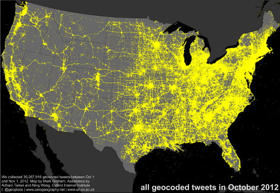
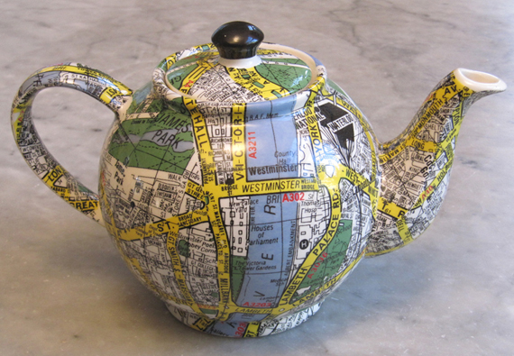
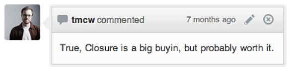

ol3
Intro
Introducing OpenLayers 3
http://ol3js.org/
Vision
a.k.a. where OL3 is going
2D 3D Convergence

(Image courtesy of the OSM-3D.org project)
Client-side rendering 
Maps are Graphics
Where does OL3 fit?
OpenLayers 3
Show me the code!
ol.Map / ol.View
var view = new ol.View2D({
center: [0, 0],
zoom: 0
});
var map = new ol.Map({
target: 'map',
layers: [layer],
view: view
});
ol.layer / ol.source
var osm = new ol.layer.TileLayer({
source: new ol.source.OSM()
});
var bing = new ol.layer.TileLayer({
source: new ol.source.BingMaps({
// your key here
key: 'AlQLZ0-5yk301_ESrmN...',
style: 'AerialWithLabels'
})
}));
var mapbox = new ol.layer.TileLayer({
source: new ol.source.TileJSON({
url: '//api.tiles.mapbox.com/v3/mapbox.world-dark.jsonp'
})
});
ol.layer / ol.source
and vector too!
var vector = new ol.layer.Vector({
source: new ol.source.Vector({
projection: ol.projection.get('EPSG:4326')
})
});
ol.interaction
ol.interaction.Dragol.interaction.DragRotateol.interaction.KeyboardPanol.interaction.TouchZoom// etc.
ol.control
ol.control.Zoomol.control.ScaleLineol.control.MousePositionol.control.Attribution// etc.
interaction/control example
What! No popups?!?
ol.Overlay
var marker = new ol.Overlay({
map: map,
position: buriedTreasure,
element: document.createTextElement('X marks the spot')
});
ol.Overlay
var el = document.getElementById('popup');
var popup = new ol.Overlay({
map: map,
element: el
});
map.on('click', function(evt) {
$(el).popover({
'placement': 'top',
'html': true,
'content': 'Roll your own popup!'
});
$(el).popover('show');
popup.setPosition(evt.getCoordinate());
});
ol.animation
function fly(map, home, duration) {
var view = map.getView().getView2D();
var start = +new Date();
var pan = ol.animation.pan({
duration: duration,
source: view.getCenter(),
start: start
});
var bounce = ol.animation.bounce({
duration: duration,
resolution: 4 * view.getResolution(),
start: start
});
map.addPreRenderFunctions([pan, bounce]);
view.setCenter(home);
}
Vector Data and Canvas 2D Rendering
- Indexing: by geometry type and bounds (R-Tree)
- Render by tiles
- Render groups of same symbolizer and geometry type
vector layer example
Interacting with Features
- Same API for all layer types
- Analytic hit detection for vector layers
map.getFeatureInfo({
pixel: evt.getPixel(),
layers: [countries], // optional
success: function(features) {
$('#info').html('');
for (var i = 0, ii = features.length; i < ii; ++i) {
$('#info').append(features[i].get('name') + '<br>');
}
}
});
Styling and Symbolization
- Feature styles and rule based styling
- Multiple symbolizers per feature
- Choices: ol3 style API, CartoCSS or SLD
style rules example
Vector Format Parsers
- Geometries use GeoJSON coordinates structure
ol.parser.GeoJSON.prototype.parsePolygon_ = function(json, opt_vertices) { return new ol.geom.Polygon( json.coordinates, opt_vertices); }; - Reprojection during parsing
vector.parseFeatures(xhr.responseText, geojson, proj); - Support for asynchronous loading
 Closure Compiler
Closure Compiler
- Variable renaming
- Dead code elimination
- Property flattening
- Prototype method devirtualization
- Inlining
Closure Compiler Example
goog.provide('ANamespace.ASubNamespace.AClass');
ANamespace.ASubNamespace.AClass = function() {
this.aProperty = 'prop1';
};
ANamespace.ASubNamespace.AClass.prototype.aMethod =
function() {
this.aProperty = 'change';
};
var anInstance = new ANamespace.ASubNamespace.AClass();
anInstance.aMethod();
window.b=new function(){this.a="prop1"};window.b.a="change";

Yes, and Yes!
Status
- Alpha 1 released
- Limited, but useful
- API still moves!
Towards 3.0.0 Final
- More alphas and betas to come
- WebGL vector renderer
- API stabilization